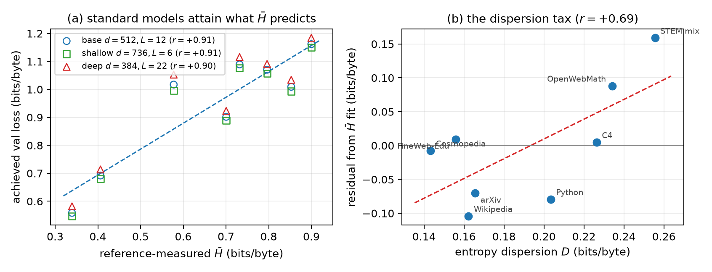
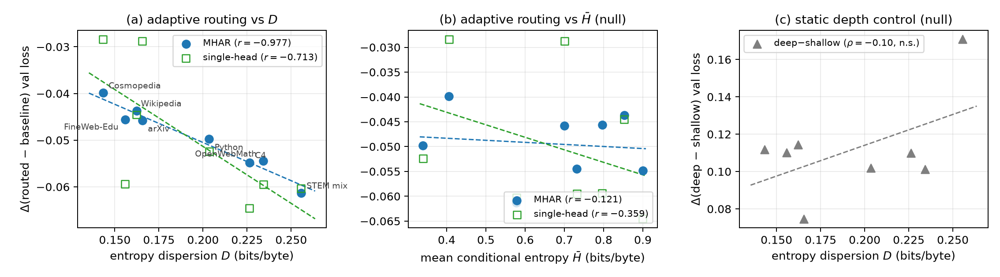

We routinely compare language-model losses across datasets — "loss on corpus A vs. corpus B" — but a cross-entropy loss conflates two very different things: how predictable a corpus is on average, and how unevenly that predictability is spread across contexts. We make the distinction operational with a two-number Corpus Entropy Profile $(\bar{H}, D)$: mean conditional entropy and entropy dispersion, both in bits per byte under declared reference models.
Given a reference model $\theta$, we score windows of a corpus by teacher-forcing: condition on a fixed 512-token prefix, then score the next 1024 tokens, so every window is measured at an identical context length. Per-token surprisals $s_i=-\log_2 p_\theta(x_i\mid x_{<i})$ are normalized per byte (via exact byte-BPE accounting), making everything tokenizer-independent.
The catch: a naive between-window standard deviation is inflated by finite-window sampling noise, and the inflation depends on window length, so the numbers aren't comparable across setups. We remove it with a split-half covariance estimator: split each window's scored tokens into two interleaved halves $A$ and $B$ (alternating 32-token blocks), and take
$$D^2 \;=\; \operatorname{Cov}_j\!\left(h_j^{A},\, h_j^{B}\right).$$
Both halves share the window's true difficulty but have independent sampling noise, so the covariance estimates the real dispersion with the noise term cancelled. Because $\bar{H}$ is a byte-weighted mean and $D^2$ a between-window variance, the profile of any mixture follows in closed form — and dispersion of a blend exceeds that of its components whenever their means separate. Mixing is a dispersion amplifier.
| Corpus | $\bar{H}$ (bits/byte) | $D$ (bits/byte) |
|---|---|---|
| C4 (web) | 0.900 | 0.226 |
| Wikipedia | 0.853 | 0.162 |
| FineWeb-Edu | 0.796 | 0.156 |
| OpenWebMath | 0.732 | 0.234 |
| arXiv | 0.701 | 0.166 |
| STEM/code mix | 0.578 | 0.256 |
| Cosmopedia (synthetic) | 0.406 | 0.143 |
| Python code | 0.340 | 0.203 |
The two axes are decoupled in practice: high-entropy corpora split by dispersion (C4 high vs. Wikipedia/FineWeb low), and so do low-entropy ones (Python high vs. Cosmopedia low). Three things stand out:
These orderings are stable: the per-window difficulty rank correlation between a 0.6B and a 1.7B reference model is 0.976–0.993 on every corpus, and a model-free LZMA compression anchor agrees on both axes.
The profile is measured with off-the-shelf reference models. Do its axes say anything about models trained on these corpora? We trained three standard (vanilla) transformers of different shape — all ~37M non-embedding parameters — from scratch on each corpus. Their achieved loss, in bits per byte, tracks $\bar{H}$ at $r = 0.90$–$0.91$ for every shape. And the residual of that fit tracks $D$: at fixed mean entropy, more dispersed corpora are harder for a small static model — a "dispersion tax."

(a) Three standard transformer shapes attain what $\bar{H}$ predicts ($r\approx0.90$). (b) The residual from that fit rises with dispersion $D$ — small static models pay a tax for unevenly-hard data. No custom architecture is involved.
If dispersion taxes a static model, can a model that adapts computation per context earn part of it back? We swept eight corpora with depth-routing architectures that let each position assemble its own mixture of features across layers, and measured the gain over a plain-residual baseline. The gain tracks $D$ almost perfectly — and is unrelated to $\bar{H}$:
$$r\!\left(\Delta_{\text{gain}},\, D\right) = -0.977 \quad(\text{permutation } p = 0.0002), \qquad r\!\left(\Delta_{\text{gain}},\, \bar{H}\right) = -0.12.$$

(a) Two adaptive-routing variants both track dispersion $D$. (b) Neither tracks mean entropy $\bar{H}$. (c) A parameter-matched static depth–width change tracks neither axis — the correlation is specific to per-context adaptive computation, not depth per se.
Panel (c) is the control that matters: swapping a shallow-wide for a deep-narrow standard transformer — a static architectural change of matched parameters — produces a gap that tracks neither axis. What dispersion predicts is not the value of depth, but the value of computation that adapts to each context. On a low-dispersion corpus, contexts are interchangeable and a static model is already near-optimal; on a high-dispersion corpus, easy and hard contexts want different treatment, and an adaptive model harvests the spread.
Architecture claims are often secretly data-distribution claims. "Method X beats a dense baseline" can hold on one corpus and vanish on another, and the profile tells you which way to expect: the win grows with $D$. The profile is cheap (minutes per corpus on one GPU), tokenizer-independent, compositional under mixing, and verified end-to-end (independent recomputation, exact byte accounting, from-scratch re-scoring, and a mixture identity accurate to $<10^{-4}$). Declare your references, report $(\bar{H}, D)$ alongside your corpus, and a hidden variable becomes visible.
The profile connects to several lines: $\mathcal{V}$-usable information and pointwise-V-information as model-relative difficulty (Ethayarajh et al., 2022; Xu et al., 2020); compression views of language modeling that motivate bits-per-byte (Delétang et al., 2024); compression- and complexity-dependent scaling laws (Pandey, 2024); and perplexity-based data selection and pruning (Marion et al., 2023). CEP's distinctive pieces are the noise-corrected dispersion estimator and the finding that dispersion — not entropy level — predicts the value of adaptive computation.